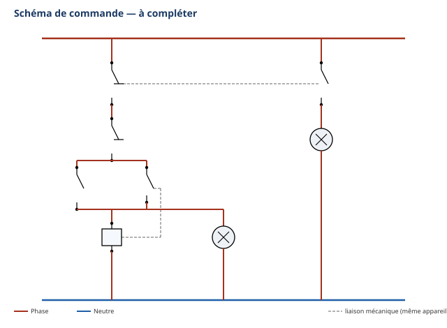

Vous voici à la 21e semaine de votre première année de formation. Ordre d'intervention
n° OI-2027-EVAL-S5S6-01 : le chantier de « l'arrière-boutique » entre en réception — le client (et le
bureau de contrôle) attendent la preuve que vos travaux tiennent et qu'ils sont sûrs. Sur 3 postes
indépendants (froid, électricité, théorie), vous montrez seul(e) ce que vous savez faire : assembler par
brasage FORT et prouver l'étanchéité d'un circuit par une véritable épreuve à l'azote (vous manipulez
vous-même le manodétendeur, professeur présent), localiser et prouver une fuite, câbler un départ moteur
industriel d'après un schéma, et répondre à l'écrit sur la sécurité de la pression. On évalue ce que vous
avez déjà travaillé plusieurs fois depuis É2 (S5, S6) — rien de nouveau ne vous est demandé aujourd'hui, mais
l'exigence monte encore d'un cran.
Tâches
T10 Repérer, raccorder, assembler les réseaux fluidiques, aérauliques et électriques T11 Contrôler les circuits hors fonctionnement T12 Respecter les consignes de sécurité et protéger la zone de travail
Savoirs
S5.5 Réseaux fluidiques et mécanique des fluides S5.6 Réseaux, matériels électriques et de régulation S6.2 Principaux risques et moyens de prévention
Savoir-être — C2.4 RENFORCÉ
La sécurité EST le savoir-être aujourd'hui, à un
niveau supérieur à É1 et É2 : EPI portés sans qu'on vous le rappelle sur les 3 postes, gestes interdits
respectés (flamme, azote, tension), honnêteté du PV, du relevé et de l'auto-positionnement. C2.4 est observée
et pesée explicitement dans le barème ci-dessous, pour la première fois.
Compétences (≤ 4) — Évaluation
ÉvaluationC3.4 Façonner, raccorder, assembler, isoler les circuits (frigorifique, hydraulique, aéraulique) — sur T10 · S6.2 ÉvaluationC3.6 Câbler, repérer, connecter les liaisons électriques et électroniques — sur T10 · S5.6 ÉvaluationC3.9 Vérifier l'étanchéité d'un circuit (frigorifique, hydraulique) avant mise en service — sur T11 · S5.5
Ce qui est évalué aujourd'hui — les 3 postes
Poste
Durée
Contenu
Compétence(s) — ancrage
FROID
4 h
Réaliser un assemblage brasé FORT (2 emboîtures), cordon contrôlé ; réaliser une épreuve d'étanchéité à l'azote par paliers et remplir le PV d'épreuve (vous manipulez vous-même le manodétendeur, professeur présent en permanence) ; localiser et prouver une fuite sur un montage fourni
ÉvaluationC3.4 — sur T10 · S6.2 (assemblage) ÉvaluationC3.9 — sur T11 · S5.5 (épreuve azote + recherche de fuite)
ÉLEC
4 h
Câbler un départ moteur industriel (sectionneur, contacteur, relais thermique, moteur) avec sa commande complète (arrêt S2, marche S1, auto-maintien KM1 13-14, sécurité F1 95-96 — sans les voyants) d'après les schémas fournis, contrôle hors tension consigné avant tout appel, mise sous tension exclusivement par le professeur
ÉvaluationC3.6 — sur T10 · S5.6
THÉORIE
2 h
Écrit individuel : la sécurité de la pression (pourquoi l'azote, gestes interdits, ordre de fermeture des gaz) et lecture d'un PV d'épreuve d'étanchéité rempli fourni par le professeur
appui — nuance C3.9
Le poste théorie ne porte pas, cette fois, de
compétence pratique qui lui soit propre (à la différence d'É2, où la théorie portait C4.5) : il sert à confirmer
que vous comprenez POURQUOI vous faites ce que vous faites au poste froid — c'est un appui qui nuance C3.9 et qui
pèse sur votre savoir-être.
⏱ Consignes générales — valables pour les 3 postes
Poste individuel : vous travaillez seul(e), sans aide ni échange avec un camarade, sur chacun des
3 postes.
Chaque poste est autoportant : ce document contient tout ce qu'il faut, lisez chaque partie en
entier avant d'agir.
Matériel autorisé : uniquement celui indiqué à chaque poste ; pas de note personnelle, pas de
téléphone.
La sécurité renforcée de S5-F1 (flamme HP), de S5-F2/S6-F1 (azote) et de S5-E1/E2 (électricité)
s'applique sans exception : l'évaluation n'exonère de rien. Le professeur reste seul juge pour
arrêter un geste dangereux, sur les 3 postes, sans exception.
En cas de doute de sécurité, levez la main et attendez le professeur avant d'agir — c'est le seul
moment où il intervient sur votre geste.
Vous complétez votre auto-positionnement honnêtement, avant que le professeur ne corrige (feuille
finale).
Comme au chantier de « l'arrière-boutique » (S5-F1), vous réalisez aujourd'hui, seul(e)
et dans les conditions d'une évaluation, un petit assemblage brasé fort (2 emboîtures), sur un gabarit
fourni par le professeur (dimensions à faire valider par lui, comme au poste de brasage de S5-F1). Ce sont les
4 brevets de S5-F1 — allumer/régler la flamme HP, chauffer au rouge sans percer, déposer le métal d'apport par
capillarité, assembler — que vous mobilisez aujourd'hui d'un seul tenant, sans démonstration préalable.
Matériel autorisé pour cette partie
Tube cuivre, gabarit fourni par le professeur (longueur et diamètre selon le poste, à faire valider)
Poste de brasage HP (chalumeau oxy-combustible, bouteille d'oxygène + bouteille de gaz combustible)
— consommable ; dispositifs anti-retour de flamme en place sur chaque poste
(vérifiés avant allumage)
Métal d'apport (baguette de brasage cuivre-phosphore) + flux décapant (consommables)
Tampon abrasif ou toile émeri (décapage mécanique avant brasage)
Outil d'expansion (pince à emboîture)
Pare-flamme, gants de soudeur (résistants à la chaleur, manchettes), tablier en cuir, chaussures de
sécurité (obligatoires)
Lunettes de protection à verres teintés, indice de teinte 4 à 7 (D'après fiche de poste CDG 50)
Extincteur et trousse de secours localisés au poste de brasage (vérifiés en début de créneau)
Bac de récupération des chutes de cuivre
⚠ Rappel sécurité — la flamme HP, comme en S5-F1 — Gants de soudeur, tablier
et lunettes teintées portés avant tout allumage ; jamais de flamme dirigée vers un camarade ni à proximité d'une
bouteille de gaz ; jamais toucher un tube fraîchement brasé à main nue ; jamais poser le chalumeau allumé, même un
instant ; bouteilles toujours debout et arrimées. 🚨 En cas de retour de flamme (le chalumeau
« claque ») : fermez immédiatement le robinet du gaz COMBUSTIBLE en premier, puis celui de l'oxygène (D'après
INRS ED 742) ; alertez le professeur sans attendre. 🚨 En cas de brûlure : refroidissez sous l'eau
tempérée, sans interrompre le refroidissement, alertez le professeur.
Les étapes de l'assemblage
☐ 1. Décaper chaque zone d'emboîture (surface propre, sans oxydation)
☐ 2. Appliquer le flux décapant
☐ 3. Montrer le décapage au professeur AVANT toute chauffe — obligation, pas une option
☐ 4. Chauffer uniformément jusqu'à la coloration rouge sombre (température d'environ 750 °C, D'après la
fiche CCCA-BTP)
☐ 5. Présenter le métal d'apport au point le plus chaud : il doit être aspiré par capillarité, jamais poussé
☐ 6. Retirer la flamme dès le cordon complet, sans surchauffer
☐ 7. Laisser refroidir sans y toucher, puis contrôler visuellement le cordon
Tableau de contrôle visuel — l'assemblage
Continu ?
Brillant ?
Sans manque ?
Sans surchauffe ?
Conforme ?
☐ O ☐ N
☐ O ☐ N
☐ O ☐ N
☐ O ☐ N
☐ O ☐ N
Visa professeur — pièce brasée
☐ Décapage vérifié avant chauffe ☐ Cordon conforme ☐ Refroidissement respecté avant
manipulation
POSTE FROID — partie B : épreuve d'étanchéité à l'azote et PV d'épreuve
C3.9 sur T11 · S5.5 — Évaluation≈ 70 min
Ce qui change depuis S5-F2 — En S5-F2, vous manipuliez le manodétendeur en
binôme, à rôles tournants. Aujourd'hui, vous manipulez SEUL(E) — le professeur reste présent en
permanence, mais il n'y a plus de partage des rôles. Le document que vous remplissez n'est plus une simple
check-list de préparation : c'est le PV D'ÉPREUVE que le chantier de réception (OI-S6-1) exige.
La mise en pression par paliers — un geste que vous conduisez, professeur présent
1. Votre pièce brasée et refroidie (ou le montage fourni par le professeur) est présentée, contrôle
visuel fait.
2. Le professeur reste présent en permanence pendant toute manipulation du manodétendeur.
3. Vous raccordez le manodétendeur au montage, sous supervision directe.
4. Vous montez PAR PALIERS : jamais directement à la pression finale.
5. À chaque palier, vous badigeonnez tous les raccords à l'eau savonneuse et notez le résultat sur le PV
ci-dessous.
6. Vous ne passez au palier suivant qu'après validation du professeur.
7. Ce cycle se répète jusqu'à la pression d'épreuve fixée par le professeur, affichée au poste.
8. La pièce est tenue en pression pendant la durée fixée par le professeur pour ce contrôle.
9. Le professeur dépressurise et ferme la bouteille en fin d'épreuve.
Pour mémoire : un essai de référence se vérifie
sur au moins 24 h (D'après : 1 mise sous azote.docx) ; la durée retenue aujourd'hui, plus courte, est fixée par
le professeur selon le temps du poste — ce n'est pas l'épreuve réglementaire complète.
⚠ Gestes interdits — rappel absolu — Jamais d'oxygène ni d'air comprimé
pour une épreuve d'étanchéité, quelle que soit la situation ; jamais dépasser la pression fixée par le
professeur ; jamais monter en pression autrement que par paliers ; jamais se placer dans l'axe des raccords ;
jamais agir sans professeur présent à côté de vous.
POSTE FROID — partie C : localiser et prouver une fuite
C3.9 sur T11 · S5.5 — Évaluation≈ 50 min
Comme au défi « tableau de chasse » de S6-F2, le professeur vous confie un
montage déjà sous pression (le vôtre s'il s'est révélé fuyard en partie B, ou un montage préparé
volontairement fuyard). Votre mission : localiser la ou les fuites, les prouver à l'eau savonneuse,
les marquer, et en rendre compte honnêtement — sans jamais toucher vous-même à la bouteille ou au
manodétendeur.
☐ 1. Contrôler méthodiquement chaque raccord du montage, un par un, sans en oublier
☐ 2. Badigeonner à l'eau savonneuse et observer
☐ 3. Marquer au feutre chaque point où une fuite est prouvée
☐ 4. Rendre compte au professeur, en désignant précisément chaque fuite trouvée
Tableau de compte rendu
Raccord contrôlé
Bulles observées ?
Fuite prouvée ?
Emplacement précis marqué
☐ Oui ☐ Non
☐ Oui ☐ Non
☐ Oui ☐ Non
☐ Oui ☐ Non
☐ Oui ☐ Non
☐ Oui ☐ Non
Question de savoir-être — Vous pensez avoir trouvé toutes les fuites, mais
vous n'êtes pas certain(e) d'avoir contrôlé un raccord difficile d'accès. Que faites-vous : vous rendez compte
comme si tout était vérifié, ou vous signalez ce doute au professeur ?
Bonne réponse attendue : on signale toujours un
doute plutôt que de rendre un compte-rendu qu'on sait incomplet — l'honnêteté de la preuve fait partie du
savoir-être, exactement comme au défi de S6-F2.
Visa professeur — recherche de fuite
☐ Contrôle méthodique de tous les raccords ☐ Fuite(s) réellement prouvée(s), pas seulement
supposée(s) ☐ Compte rendu honnête
Visa : ________________ Heure : ________________
Rangement — poste froid
☐ 1. Vérifier qu'aucun tube brasé n'est encore chaud avant de quitter le poste
☐ 2. Éteindre le chalumeau et fermer les bouteilles de gaz (professeur pour l'azote)
☐ 3. Trier les chutes de cuivre, nettoyer le poste, ranger l'outillage
POSTE ÉLEC — câblage d'un départ moteur industriel
C3.6 sur T10 · S5.6 — Évaluation≈ 4 h
Comme en S5-E1/S5-E2/S6-E1, vous câblez le départ moteur qui entraînera le
compresseur de la future chambre froide de « l'arrière-boutique » (OI-S6-3) : sectionneur (Q1), contacteur
(KM1), relais thermique (F1), moteur (M1), et la commande complète — bouton arrêt (S2), bouton marche
(S1), auto-maintien par le contact auxiliaire KM1 13-14. C'est exactement le niveau 1 du contrat de
réussite de S6-E1 (sans les voyants H1/H2, qui restent hors évaluation aujourd'hui). Méthode connue :
lire le schéma → implanter → câbler la puissance → câbler la commande → CONTRÔLE HORS TENSION → mise sous
tension UNIQUEMENT par le professeur. Vous ne mettez jamais votre platine sous tension vous-même.
La consignation — rituel en 4 étapes (rappel NF C 18-510)
1. Couper — le sectionneur (Q1) du poste reste ouvert pendant tout le câblage.
2. Vérifier l'absence de tension (VAT) — au multimètre, position voltmètre.
3. Condamner / signaler — personne d'autre ne remet l'alimentation ; seul le professeur ferme le
sectionneur.
4. Travailler hors tension — tout le câblage et le contrôle se font sectionneur ouvert.
⚠ Gestes interdits — jamais toucher un fil ou une platine sans avoir vérifié
l'absence de tension ; jamais câbler ou modifier une platine sous tension ; jamais mettre une platine sous
tension vous-même ; jamais provoquer un vrai défaut thermique — seul le bouton test du relais F1 est
autorisé ; jamais s'approcher de l'arbre du moteur en rotation. 🚨 En cas d'incident : couper
(arrêt d'urgence de l'atelier), alerter le professeur, ne jamais déplacer un camarade électrisé.
Matériel autorisé
Platine en bois équipée d'un rail oméga
Sectionneur tripolaire (repère Q1)
Contacteur (repère KM1), avec son contact auxiliaire NO 13-14 (auto-maintien)
Relais thermique (repère F1), avec son contact NF 95-96
Bouton-poussoir marche NO (repère S1)
Bouton-poussoir arrêt NF (repère S2)
Moteur du poste école (repère M1), avec plaque signalétique — couplage selon notice, à faire
valider
Les schémas développés (puissance : Q1, KM1, F1, M1 · commande : S2, S1,
auto-maintien KM1 13-14, F1 95-96, bobine KM1) figurent ci-dessous en réduit et en annexes pleine page en
fin de document : gardez les annexes sous les yeux pendant tout le câblage. Ce sont les mêmes schémas que ceux
travaillés en S5-E2/S6-E1 — les voyants H1/H2 visibles sur le schéma de commande ne sont PAS câblés
aujourd'hui (niveau 2 du contrat de S6-E1, hors évaluation).

Préparer et câbler
☐ 1. Vérifier que la platine est hors tension (sectionneur Q1 ouvert)
☐ 2. Positionner Q1, KM1, F1, S1 et S2 selon le schéma d'implantation, fixer sans forcer
☐ 3. Câbler le circuit de puissance : Q1 → contacts de puissance de KM1 (bornes 1-3-5) → sortie KM1
(2-4-6) → relais thermique F1 → moteur M1, selon le couplage indiqué
☐ 4. Câbler le circuit de commande : une phase de commande → contact 95 de F1 → sortie 96 → bouton
arrêt S2 (NF) → bouton marche S1 (NO) → borne A1 de la bobine KM1 → borne A2 vers le neutre (ou l'autre phase
de commande, selon le matériel)
☐ 5. Câbler l'AUTO-MAINTIEN : le contact auxiliaire KM1 13-14 (NO) en parallèle du bouton marche
S1 — jamais en série avec la bobine, comme appris en S5-E2
☐ 6. Vérifier que chaque connexion est bien serrée et conforme aux couleurs normalisées
Mesure de continuité (multimètre, sectionneur ouvert)
Valeur attendue
Valeur mesurée
Conforme ?
Continuité de la puissance (Q1 → KM1 → F1 → M1, par phase)
proche de 0 Ω
☐ Oui ☐ Non
Continuité de la commande (S1 appuyé)
proche de 0 Ω
☐ Oui ☐ Non
Continuité de la commande (rien appuyé)
résistance infinie
☐ Oui ☐ Non
Si une valeur ne correspond pas à celle attendue,
signalez-le vous-même au professeur avant de l'appeler pour le contrôle final : l'honnêteté du contrôle fait
partie de l'évaluation du savoir-être. Une fois votre contrôle conforme, appelez le professeur : lui seul
ferme le sectionneur.
Essais (réalisés par le professeur)
Contrôle et essais
☐ Câblage vérifié conforme aux schémas par le professeur
☐ Appui sur S1 : le moteur démarre
☐ Relâchement de S1 : le moteur CONTINUE de tourner (auto-maintien)
☐ Appui sur S2 : le moteur s'arrête
☐ Bouton test du relais thermique F1 : coupure observée
Visa professeur : ________________ Heure : ________________
Question — le rôle du relais thermique dans la commande
Question — Le contact 95-96 du relais thermique F1 est câblé en série
dans le circuit de commande, jamais dans le circuit de puissance. Expliquez avec vos mots pourquoi, et ce
qui se passerait si ce contact était absent en cas de surcharge du moteur.
Question — pourquoi jamais vous-même ?
Question — Depuis S1, la mise sous tension d'une platine que vous venez de
câbler est toujours réservée au professeur. Pourquoi cette règle ne souffre-t-elle aucune exception, même le jour
d'une évaluation ?
Rangement — poste élec
☐ 1. Remettre la platine hors tension (sectionneur ouvert, débranché)
☐ 2. Remettre la molette du multimètre sur OFF, ranger les cordons sans coude serré
☐ 3. Ranger les fils, sans les plier de façon serrée
☐ 4. Vérifier que le poste est propre et dégagé pour l'élève suivant
Cet écrit reprend, sous une autre forme, ce que vous avez travaillé en S6-T1 (les
risques de la pression, les gaz neutres) et vécu au poste froid de S5-F2/S6-F1. Vous répondez seul(e), sans note
ni téléphone.
Exercice 1 — pourquoi l'azote, jamais l'oxygène ni l'air comprimé
Question a — Expliquez avec vos mots pourquoi on utilise un gaz neutre
(l'azote) et jamais de l'oxygène ni de l'air comprimé pour réaliser une épreuve d'étanchéité.
Question b — L'azote est un gaz que l'on ne sent pas et que l'on ne voit
pas. Quel risque particulier présente-t-il dans un local mal ventilé, et quelle est la parade ?
Exercice 2 — l'ordre de fermeture des gaz en cas d'incident
Question — En cas de retour de flamme au poste de brasage, quel robinet
fermez-vous EN PREMIER : celui du gaz combustible, ou celui de l'oxygène ? Justifiez votre réponse.
Exercice 3 — lire un PV d'épreuve d'étanchéité déjà rempli
⚠ Le PV ci-dessous est à compléter par le professeur, avec des valeurs internes
cohérentes (pression fixée par lui, paliers, verdict), avant la passation. Aucune valeur n'est imprimée
dans ce document : c'est une consigne, pas un oubli — comme au poste froid, on ne recopie jamais une valeur de
mémoire.
Montage contrôlé
Pression d'épreuve fixée
Palier
Bulles observées ?
1
2
3 (final)
Verdict inscrit sur le PV fourni : ☐ Étanche ☐ Fuyard
Question a — D'après le PV que le professeur vous a remis, à quel palier
(le cas échéant) une anomalie a-t-elle été observée ?
Question b — Quel est le verdict final inscrit sur ce PV ? Si le verdict est
« fuyard », que doit-on faire avant de pouvoir livrer l'installation au client ?
Question c — Pourquoi un PV d'épreuve doit-il être signé à la fois par
l'intervenant et par un responsable, et jamais rempli après coup, de mémoire ?
Réalise seul(e) l'assemblage brasé fort, cordon conforme (continu, brillant, sans manque, sans surchauffe).
Comme « Acquis », et repère seul(e) un défaut avant de présenter la pièce.
C3.9 Vérifier l'étanchéité d'un circuit
sur T11 · S5.5
Compétence non observée ce jour.
Ne conduit pas la montée par paliers malgré l'aide, ou PV non honnête, ou fuite non trouvée alors qu'elle était accessible.
Conduit l'épreuve et la recherche de fuite avec l'aide du professeur.
Conduit seul(e) l'épreuve par paliers, remplit le PV honnêtement, localise et prouve la fuite si elle existe.
Comme « Acquis », et explique pourquoi on ne teste jamais à l'oxygène ni à l'air comprimé.
C3.6 Câbler, repérer, connecter les liaisons
sur T10 · S5.6
Compétence non observée ce jour.
Câblage non conforme aux schémas (auto-maintien absent ou en série avec la bobine), ou consignation non respectée.
Câblage fonctionnel avec l'aide du professeur.
Câble seul(e) le départ moteur (puissance et commande complète), auto-maintien fonctionnel (le moteur continue de tourner au relâchement de S1), contrôle hors tension réalisé avant tout appel.
Comme « Acquis », et explique le rôle de l'auto-maintien et du contact 95-96 dans la commande.
Savoir-être — C2.4 RENFORCÉ, sécurité, honnêteté
observation aux 3 postes
Non observé ce jour.
EPI incomplets, geste dangereux (flamme, azote, tension) ou valeur inventée : niveau 1 automatique.
Sécurité globalement respectée, quelques rappels nécessaires.
Sécurité et rigueur respectées sans rappel aux 3 postes, PV et mesures honnêtes, défauts signalés spontanément.
Comme « Acquis », et reste rigoureux(se) jusqu'au rangement complet des 3 postes.
Positionnez-vous honnêtement AVANT que le
professeur ne corrige : l'écart entre votre auto-positionnement et la correction fait partie de l'observation du
savoir-être.
Visa professeur : ________________ Heure de fin : ________________
Documents à remettre
Ce sujet complété (3 postes : assemblage contrôlé, PV d'épreuve, compte rendu de fuite, câblage contrôlé,
écrit théorie, auto-positionnement)
La pièce brasée (poste froid) et la platine câblée (poste élec), contrôlées par le professeur
D'après : T.P Assemblage par
brasure forte du tube cuivre, fiche atelier CAP IFCA (F. Henninot, C3-Réaliser — chauffe ≈ 750 °C, fusion
> 450 °C) ; fiche procédure CCCA-BTP « Brasure forte » ; INRS ED 742 « Soudage et coupage au chalumeau »
(fermeture combustible puis oxygène, oxygène stocké à 200 bar) ; fiche de poste CDG 50 (teinte 4-7) ; documents
S5-F1 (brevets 1-4) ; 1 mise sous azote.docx (bouteille pleine ≈ 200 bar, essai de référence 10 bar minimum
pendant 24 h) ; FDS - Azote.pdf (asphyxie, ventilation) ; documents S5-F2/S6-F1 (épreuve par paliers, PV
d'épreuve) ; documents S6-F2 (recherche de fuite, tableau de chasse) ; documents S5-E1/S5-E2/S6-E1 (départ
moteur et commande complète, repères Q1/KM1/F1/S1/S2/M1, contacts auxiliaires 13-14 et 95-96, auto-maintien,
consignation NF C 18-510) ; FDS - Azote.pdf et ED 742 (gaz neutre, jamais oxygène ni air
comprimé). Forme du document (architecture, barème harmonisé, gestion des absents) : Évaluation sommative É2
S3-S4 (semaine 13), F. Henninot. Aucune valeur n'est inventée : pression d'épreuve et durée de tenue fixées par
le professeur, PV théorie complété par le professeur avant impression.
Schéma de commande — document de travail à compléter avec vos repères
⚠ À imprimer en A3 PAYSAGE (une feuille par
poste) : c'est le document à garder sous les yeux pendant tout le câblage de la commande. Reportez-y vous-même
les repères (S2 arrêt NF, S1 marche NO, auto-maintien KM1 13-14 en parallèle de S1, sécurité thermique F1 95-96
en série, bobine KM1 A1-A2), comme en S5-E2 — même schéma que celui travaillé en S5-E2/S6-E1, sans les
voyants : les voyants H1/H2 visibles sur ce schéma ne sont PAS câblés aujourd'hui (niveau 2 du
contrat de S6-E1, hors évaluation).
Schéma de puissance — document de travail à compléter avec vos repères
⚠ À imprimer en A3 PAYSAGE (une feuille par
poste) : à garder sous les yeux pendant le câblage de la puissance. Reportez-y les repères Q1 (sectionneur),
KM1 (contacts de puissance), F1 (relais thermique), M1 (moteur) — même schéma que celui travaillé en
S5-E1/S5-E2/S6-E1.